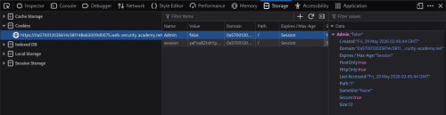

User role controlled by request parameter
- Provided with store front website, login credentials “wiener:peter”, told to delete user carlos, admin panel location at /admin
- Logged in with provided credentials on login page
- Located Admin cookie set to false in Storage section of Inspector:

- Changed Admin cookie value to True
- Navigated to /admin and deleted user carlos to complete lab: